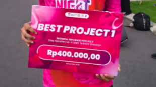
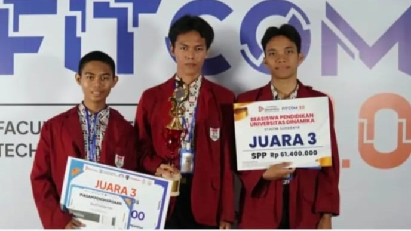
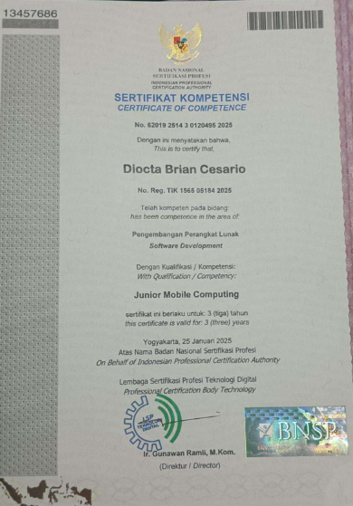
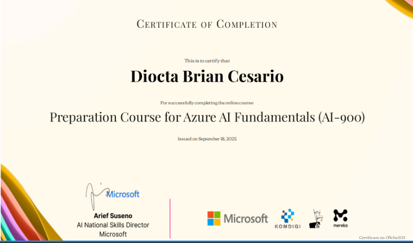
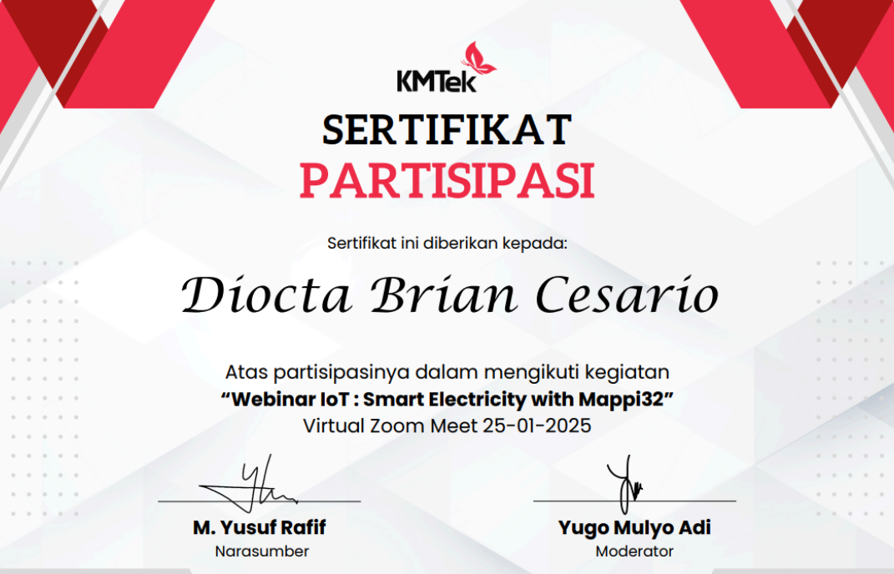
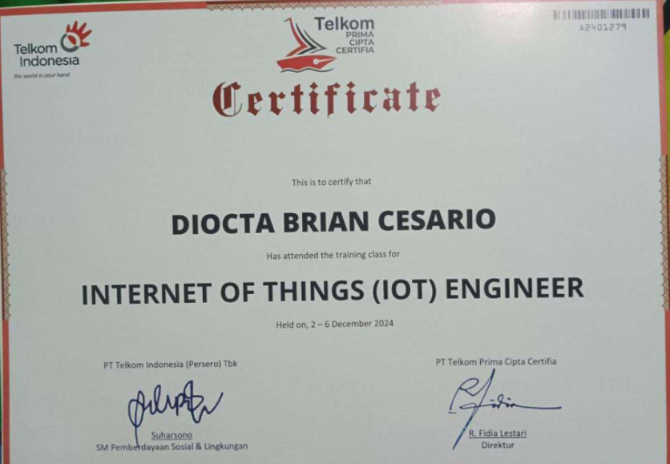
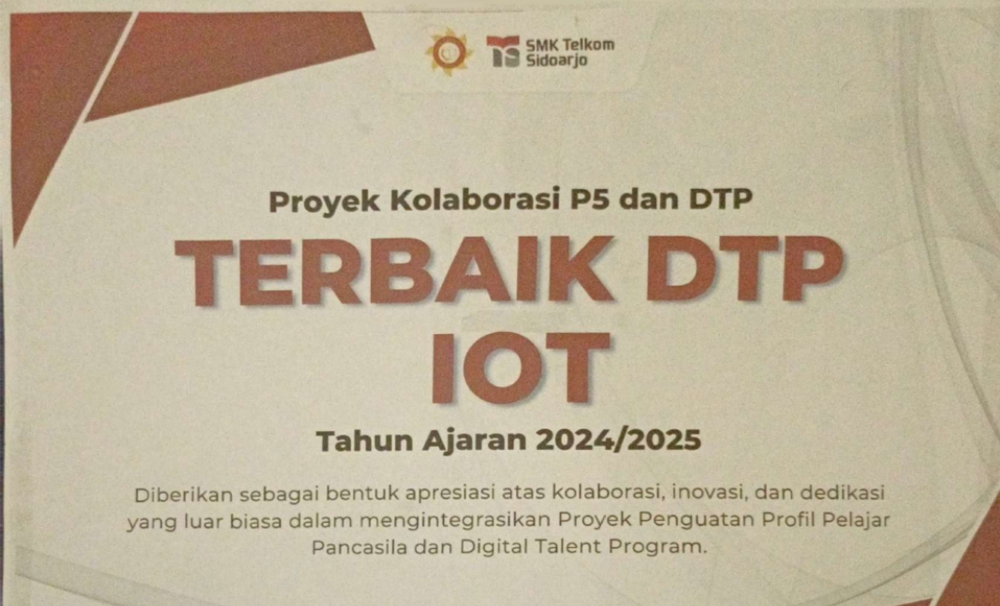
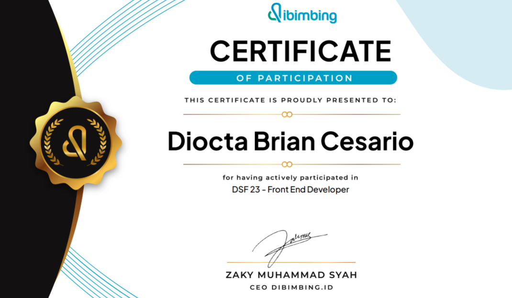
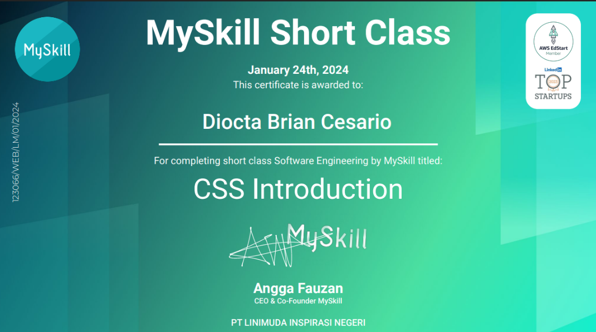
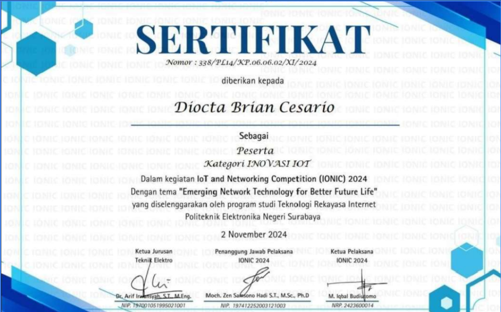

Semua pencapaian dan penghargaan yang telah diraih

SMK Telkom Sidoarjo
2025
Membuat sistem smart farm dalam project inkubasi kelas XII SIJA SMK Telkom Sidoarjo. Sistem ini menggunakan sensor untuk memonitoring kondisi tanaman, deteksi penyakit pada tanaman, serta dilengkapi dengan fitur kontrol otomatis untuk mengoptimalkan pertumbuhan tanaman.

Universitas Dinammika Surabaya
2025
Meraih juara 3 dalam kategori lomba IoT bertema Smart Farm, membuat sebuah sistem hidroponik pintar berbasis IoT dan AI yang dimana dapat memonitoring ph, nutrisi, mengontrol pompa manual dan otomatis, serta deteksi penyakit pada tanaman melalui esp32 cam.

BNSP RI dan Telkom DigiUp
2025
Menyelesaikan pelatihan dan uji kompetensi resmi dari Telkom DigiUp dan Badan Nasional Sertifikasi Profesi (BNSP) RI pada bidang Software Development.

Microsoft dan Komdigi
2025
Sertifikat yang diberikan oleh Microsoft dan Komdigi karena telah menyelesaikan pelatihan di bidang Azure AI Fundamentals.

KMTek
2025
Sertifikat yang diberikan oleh KMTek karena telah menyelesaikan webinar di bidang Internet of Things bertema Smart Electricity with Mappi32.

Telkom Indonesia
2024
Sertifikat yang diberikan oleh PT Telkom Indonesia karena telah menyelesaikan pelatihan di bidang Internet of Things.

SMK Telkom Sidoarjo
2024
Penghargaan sebagai project DTP (Digital Talent Program) IoT terbaik 2024. Mmebuat sebuah proyek Autruck dan Avto, yaitu pushback tuck otomatis dan garbarata otomatis untuk membantu sistem operasi di bandara yang dapat menderek pesawat, menghubungkan akses penumpang, serta mengurangi ketergantungan pada operator manual.

dibimbing.id
2024
Sertifikat yang diberikan oleh dibimbing.id karena telah menyelesaikan pelatihan di bidang Frontend Web Development.

MySkill
2024
Sertifikat yang diberikan oleh MySkill karena telah menyelesaikan kelas pengenalan CSS yang mencakup dasar-dasar styling, layout, dan responsive design untuk pengembangan web.

IONIC
2024
Partisipasi dalam kompetisi inovasi IoT and Networking Competition yang diselenggarakan oleh IONIC.